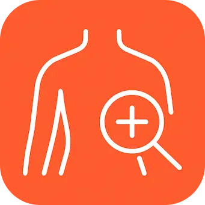

<a routerLink="/categorias">
  <div
    class="flex h-full items-center rounded-2xl border-white/20 bg-white/60 shadow-xl backdrop-blur-md backdrop-filter"
  >
    
    <div class="fuente-kengo relative m-auto text-2xl">Categorias</div>
  </div>
</a>
